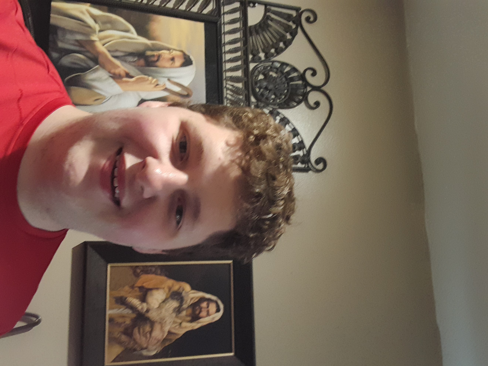

Jayden Dunn
A little about me:
I was born in Elkhart Texas and moved to utah when I was 12. at the age of 15 I Earned the Rank of Egale Scout, I Served a Mission for the Church of Jesus Christ of Latter-Day Saints in the Knoxville Tennesse Mission where is served for 2 years, I am currently in School for a Bacholars in Cybersecurity.
